Agent 自动化测试框架 · 2026
SmartTest
Agent 通过 MCP 操作真机，可委派本地视觉模型，也可按固定工作流回归。
 放大查看 ↗
放大查看 ↗Agent 的设备会话
一台真机，一个控制方
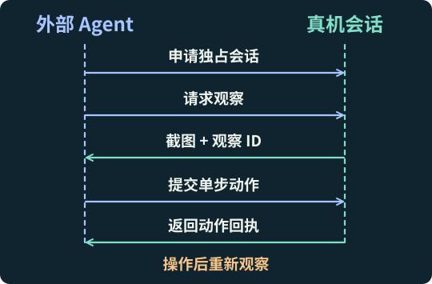
放大查看 ↗会话接口
open_device_session 取得控制权。observe_device 返回画面和观察 ID，device_action 提交动作。交还控制权后，原观察失效。
视觉模型怎样操作
每次只提议一个动作
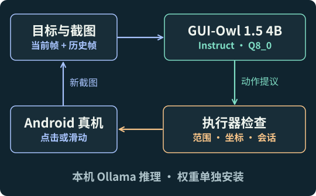
放大查看 ↗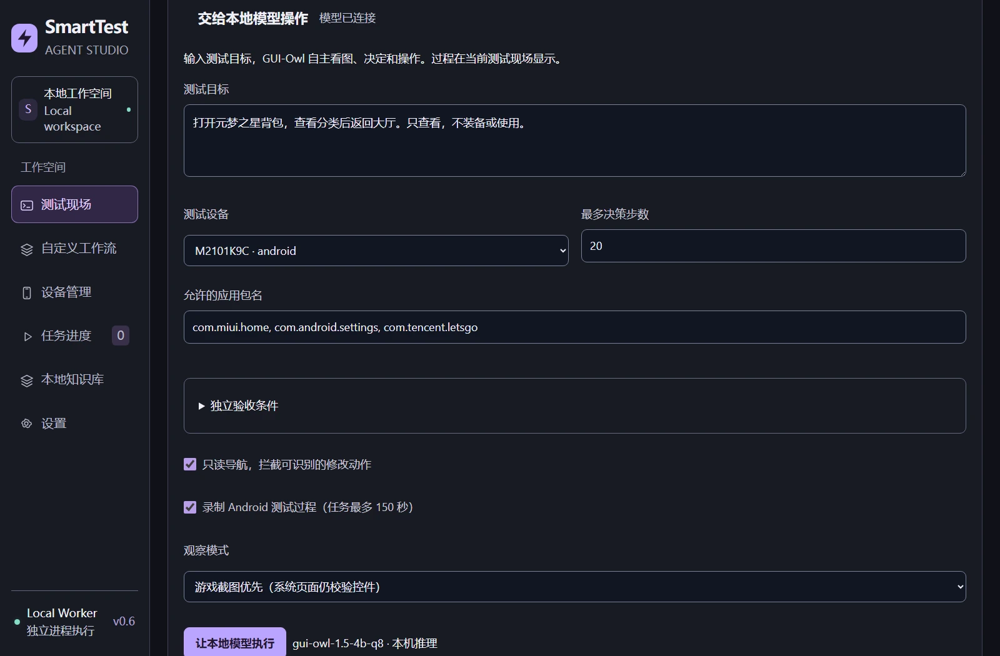
放大查看 ↗查看模型配置
本机 Ollama 加载 GUI-Owl 1.5 4B Instruct 的 Q8_0 权重。模型看到当前截图、最多三张历史截图和近期动作回执。执行器将 0–1000 的坐标换算成屏幕像素。
背包用例怎样判定
三项断言，一项通过
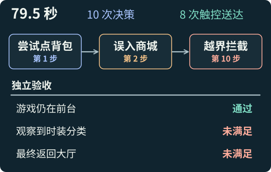
放大查看 ↗逐步动作回执
游戏节点断言通过只读 UE 接口核对。过程检查记录曾经出现的状态，结束检查读取最后一帧。
| 步骤 | 模型动作 | 执行情况 |
|---|---|---|
| 1 | 试图点击底栏的「背包」 | 已发送 |
| 2 | 点击「商场逛逛」 | 已发送，进入商城 |
| 3 | 等待页面加载 | 本地等待 2 秒 |
| 4–9 | 连续六次滑动分类栏 | 六次均已发送 |
| 10 | 滑动终点纵坐标为 1035 | 超出 0–1000 范围，拦截并结束任务 |
工作流怎样连线
节点之间传什么
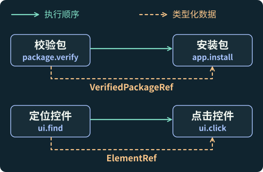
放大查看 ↗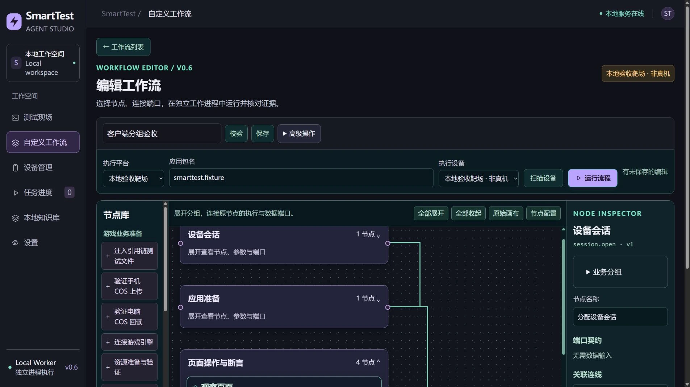
放大查看 ↗版本与运行快照
Agent 用 capabilities 发现节点，用 validate_workflow 校验连线和类型，再用 save_workflow 保存。run_saved_workflow 按指定修订执行，运行时冻结节点图、画布分组与资料引用。
同一流程跑五轮
启动性能回归
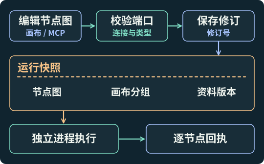
放大查看 ↗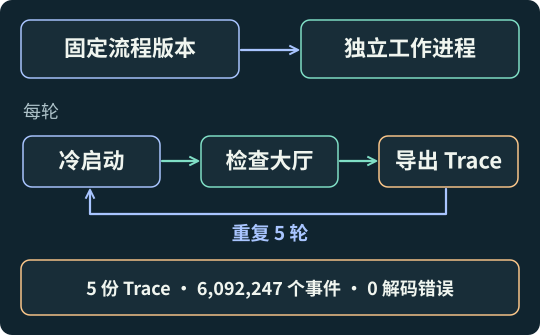
放大查看 ↗回归验收记录
Android 启动模板含 22 个业务节点。取包前先检查构建的 Unreal Insights 录制能力。五轮均重新确认大厅，导出的 Trace 在本地完成解析与清理。
| 阶段 | 实际检查 |
|---|---|
| 制品准备 | 确认构建开启 Unreal Insights，校验测试包 |
| 真机准备 | 安装、检查资源状态、登录并确认大厅 |
| 五轮采集 | 逐轮冷启动，恢复测试会话并重新断言大厅 |
| 本地验收 | 确认五份 Trace 可解析，核对下载及清理回执 |
真机校准结果
六个目标各跑一次
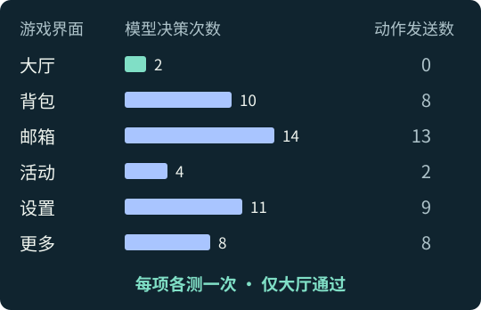
放大查看 ↗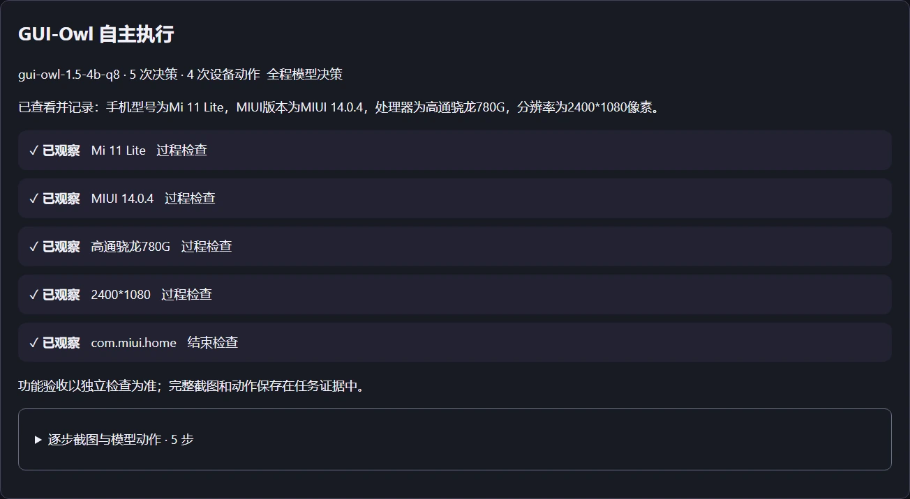
放大查看 ↗各项目标与耗时
这组六项游戏界面校准跨实现版本。设备查询结果卡来自另一组手机基础评测中的设备信息查询。
| 目标 | 决策 / 发送 | 耗时 | 结束证据 |
|---|---|---|---|
| 大厅 | 2 / 0 | 16.2 秒 | 当前应用与大厅节点满足条件 |
| 背包 | 10 / 8 | 79.5 秒 | 目标分类未出现，滑动坐标越界 |
| 邮箱 | 14 / 13 | 85.9 秒 | 达到决策上限 |
| 活动 | 4 / 2 | 22.5 秒 | 操作被只读检查拦截 |
| 设置 | 11 / 9 | 123.8 秒 | 出现过设置页，推理连接失败 |
| 更多 | 8 / 8 | 134.1 秒 | 推理连接失败，未返回大厅 |
Agent 怎样查证据
从运行追到原始产物
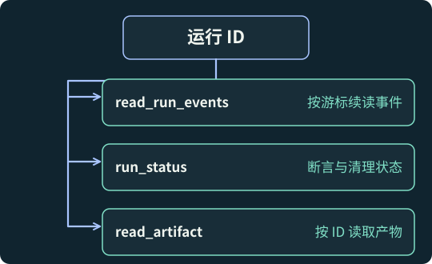
放大查看 ↗ 放大查看 ↗
放大查看 ↗证据与资料版本
知识库以 SQLite FTS5 检索测试方法和判定标准。固定流程可以绑定资料版本，按运行 ID 查回当时的依据。